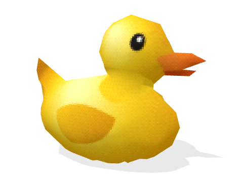

Из фото в 3D через Claude или Codex
Для подключения нужен аккаунт с оплаченным периодом или активным промокодом. Пакет MCP 1.1.0 и ключ для ассистента доступны в личном кабинете.
Подключение
- В кабинете откройте «Подключить ИИ-ассистента». Нажмите «Скачать MCP» и сохраните архив в папке проекта под именем
uglovato-mcp-1.1.0.tgz. - Нажмите «Создать ключ для ассистента». Передайте ключ в окружение процесса MCP через
UGLOVATO_API_KEY. Храните значение в личных настройках или менеджере секретов. Не вставляйте его в чат или репозиторий. - Для команд в терминале заранее задайте UGLOVATO_API_KEY в его окружении. Для Claude Desktop укажите ключ в личной конфигурации приложения. Перед каждой конвертацией инструмент проверяет доступ онлайн. Фото и готовый GLB остаются локальными.
Claude Code
На macOS или Linux откройте Bash или Zsh в папке проекта. Нужны Node.js 22+, npm и Claude Code.
npm install --prefix .uglovato-tools ./uglovato-mcp-1.1.0.tgz &&
claude mcp add --env "UGLOVATO_API_KEY=${UGLOVATO_API_KEY:?Задайте UGLOVATO_API_KEY}" --transport stdio --scope local uglovato -- node "$PWD/.uglovato-tools/node_modules/uglovato-mcp/cli.mjs" --workspace "$PWD"Подключение действует только для вас в этом проекте. После команды откройте новую сессию Claude Code в той же папке.
Codex CLI / приложение
Для CLI и приложения на macOS или Linux выполните команды в Bash или Zsh из папки проекта. Нужны Node.js 22+, npm и Codex CLI.
npm install --prefix .uglovato-tools ./uglovato-mcp-1.1.0.tgz &&
codex mcp add --env "UGLOVATO_API_KEY=${UGLOVATO_API_KEY:?Задайте UGLOVATO_API_KEY}" uglovato -- node "$PWD/.uglovato-tools/node_modules/uglovato-mcp/cli.mjs" --workspace "$PWD"Настройка общая для Codex CLI и приложения. Угловато будет работать с папкой, из которой вы выполнили команду. Откройте в ней новый чат Codex.
Claude Desktop на macOS
На macOS для приложения Claude Desktop нужны Node.js 22+ и npm. Один раз установите Угловато из терминала в папке проекта. Интернет нужен также при каждой конвертации.
npm install --prefix .uglovato-tools ./uglovato-mcp-1.1.0.tgz- В верхнем меню macOS откройте Claude → Settings → Developer → Edit Config.
- Для пустого файла скопируйте весь JSON. Если настройки уже есть, добавьте поле
mcpServersили только записьuglovato, если поле уже создано. - В
commandвставьте полный путь изwhich node. В обоих путях подargsзамените/абсолютная/папка/проектана результатpwdиз папки проекта. В полеenvукажите свой ключ вместо текста в угловых скобках.
{
"mcpServers": {
"uglovato": {
"command": "/opt/homebrew/bin/node",
"env": {"UGLOVATO_API_KEY": "<ключ из кабинета>"},
"args": [
"/абсолютная/папка/проекта/.uglovato-tools/node_modules/uglovato-mcp/cli.mjs",
"--workspace",
"/абсолютная/папка/проекта"
]
}
}
}Сохраните файл, закройте Claude через ⌘Q и запустите снова. Отправьте пример задания в чате приложения.
Первая модель в чате
Сохраните свой снимок как duck.webp в папке проекта. После подключения отправьте задание в новом чате. Ассистент сохранит GLB рядом с фото.


С помощью Угловато собери модель из duck.webp в стиле PS1, вариант 1. Сохрани duck.glb рядом с исходником.
Как проверить готовый GLB в Blender
Задание с генерацией изображения
Если у тебя есть генерация изображений, создай PNG жёлтой резиновой утки в профиль на прозрачном фоне и сохрани его в папке проекта как duck.png. Если генерации нет, попроси у меня один файл. Затем вызови Угловато для этого изображения, выбери стиль PS1 и вариант 1. Сохрани duck.glb в той же папке и верни полный путь к готовой 3D-модели.
Как отключить Угловато
Claude Code
Для Claude Code выполните команду в той же папке проекта.
claude mcp remove --scope local uglovatoCodex CLI / приложение
Команда удаляет подключение из общих настроек Codex.
codex mcp remove uglovatoДля Claude Desktop на macOS удалите только запись uglovato из mcpServers в Edit Config и перезапустите приложение через ⌘Q.